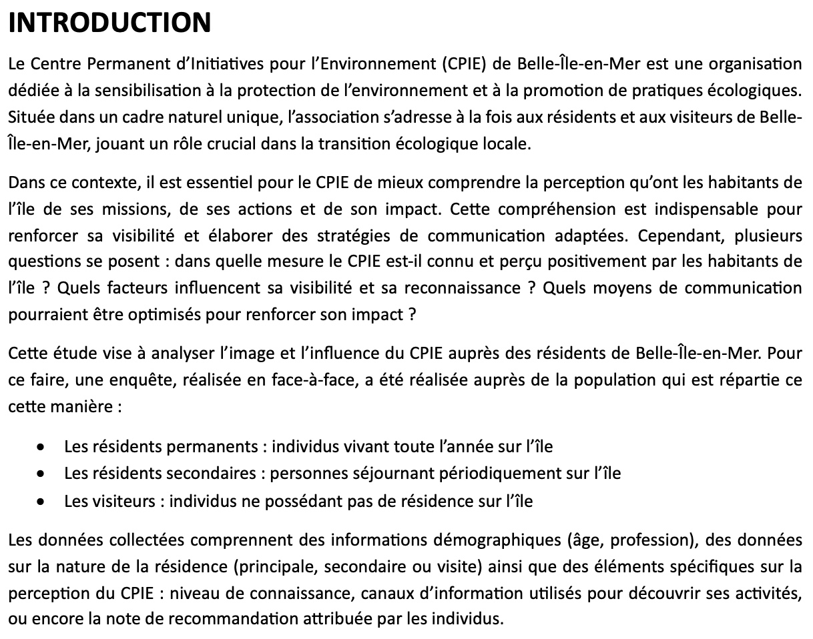
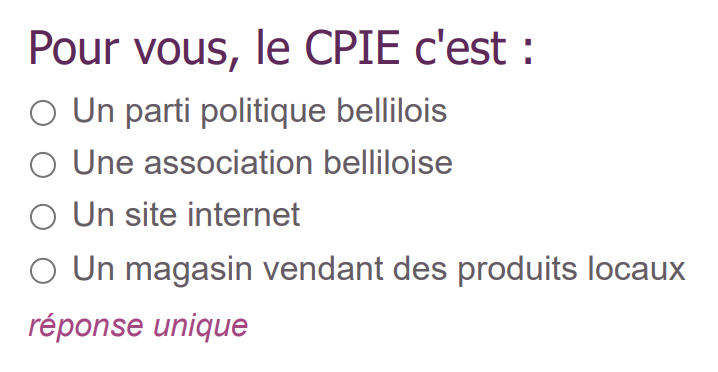
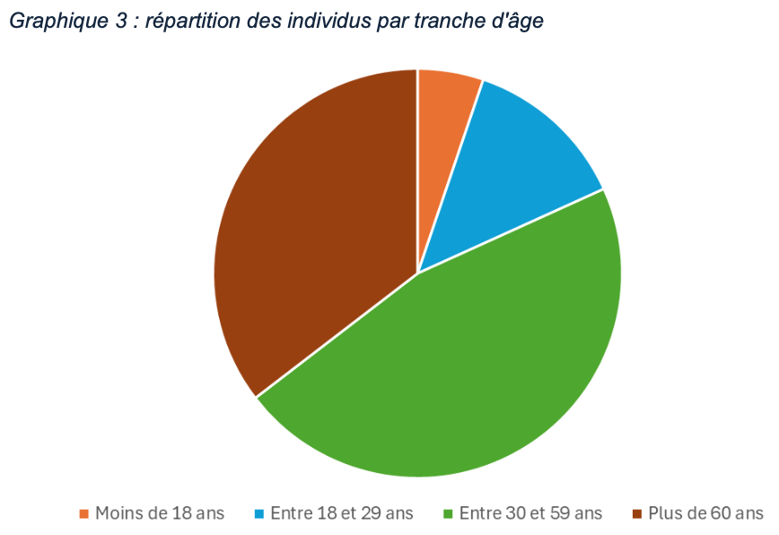
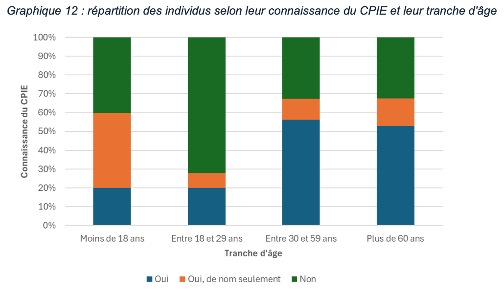
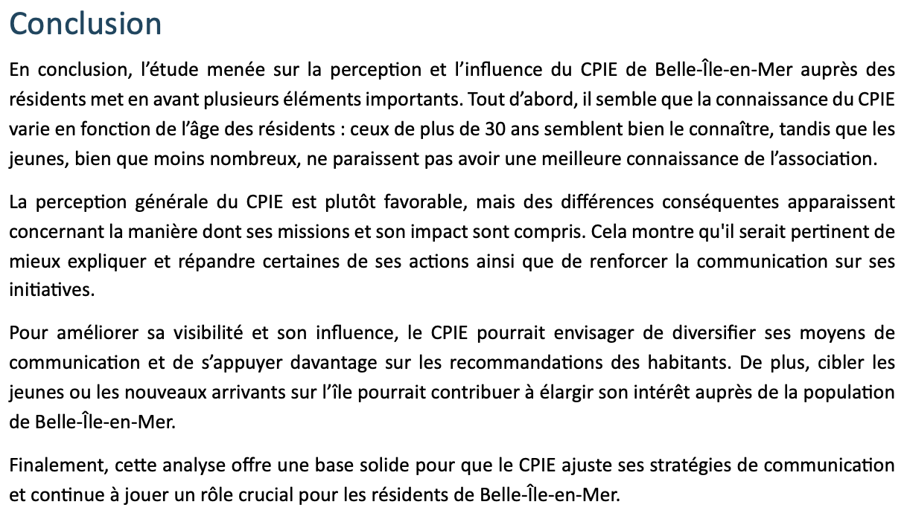

Cette capture d’écran montre l’introduction de l’enquête réalisée pour analyser l’image et l’influence du CPIE de Belle-Île-en-Mer auprès des résidents. Elle présente le contexte de l’étude, les objectifs de l’enquête et la méthodologie d’échantillonnage (habitants permanents, résidents secondaires et visiteurs).
J’ai rédigé ce texte en soignant la structure des paragraphes et en utilisant des termes précis, afin de faciliter la compréhension et de mettre en contexte la démarche pour le lecteur.
Cette preuve démontre que j’ai acquis la compétence AC 13.02, car j’ai su relier les données collectées à un contexte local pertinent et présenter les objectifs de façon claire. Elle prouve également que j’ai acquis la compétence AC 13.06, car j’ai utilisé une expression précise et nuancée pour expliquer la démarche, rendant la lecture accessible et professionnelle.
Cette capture d’écran illustre une question de l’enquête réalisée auprès des habitants de Belle-Île-en-Mer pour mesurer leur perception du CPIE. La question « Pour vous, le CPIE c’est : » propose quatre réponses fermées, permettant d’évaluer le niveau de connaissance et de compréhension de l'association.
J’ai conçu cette question pour contextualiser la perception des habitants et mieux comprendre leur représentation du CPIE, afin d'adapter la communication et les actions de sensibilisation.
ette preuve démontre que j’ai acquis la compétence AC 13.06, car j’ai rédigé la question de façon claire et accessible pour garantir une réponse pertinente et exploitable. Elle valide également la compétence AC 13.01, car j’ai su anticiper et limiter les biais possibles (ex. formulation neutre, choix de réponses équilibré) pour améliorer la fiabilité des résultats.
Ce graphique en secteurs présente la répartition des individus par tranche d’âge recueillie lors de l’enquête sur la perception du CPIE à Belle-Île-en-Mer. Les tranches sont distinguées par des couleurs pour faciliter la lecture : moins de 18 ans, entre 18 et 29 ans, entre 30 et 59 ans et plus de 60 ans.
J’ai conçu ce graphique pour contextualiser les données démographiques et identifier les publics cibles dans la communication du CPIE. Cette représentation permet de mettre en évidence la tranche d’âge la plus représentée et d’adapter les stratégies de communication en conséquence.
Cette preuve démontre que j’ai acquis la compétence AC 13.01, car j’ai su anticiper et limiter les biais liés à la visualisation des données (choix des couleurs, lisibilité). Elle valide également la compétence AC 13.02, car j’ai su relier les données collectées à un contexte pertinent pour répondre aux besoins du projet. Enfin, elle valide la compétence AC 13.05, car j’ai compris l’intérêt d’utiliser un graphique clair et lisible pour faciliter la compréhension et la communication des résultats.
Ce graphique en barres empilées présente la répartition des individus selon leur connaissance du CPIE et leur tranche d’âge. Il montre les proportions de personnes connaissant le CPIE (« Oui »), celles qui connaissent « de nom seulement » et celles qui ne le connaissent pas (« Non »), réparties par classes d’âge (moins de 18 ans, entre 18 et 29 ans, entre 30 et 59 ans, plus de 60 ans).
J’ai sélectionné ce graphique pour mettre en contexte la connaissance du CPIE au sein de la population étudiée et identifier les classes d’âge où la réputation est plus faible. Cette représentation visuelle permet de mettre en évidence les résultats afin de comparer les tranches d’âge entre elles.
Cette preuve démontre que j’ai acquis la compétence AC 13.01, car j’ai su prendre en compte les biais possibles dans la restitution des résultats (par exemple, la surestimation ou la sous-estimation d’une catégorie). Elle valide également la compétence AC 13.02, car j’ai contextualisé les données selon un critère pertinent pour analyser la notoriété du CPIE. Enfin, elle valide la compétence AC 13.05, car j’ai compris l’intérêt d’utiliser la data visualisation pour rendre les résultats plus lisibles et exploitables.
Ce texte constitue la conclusion de l'étude menée sur la perception et l'influence du CPIE de Belle-Île-en-Mer auprès des habitants. Il synthétise les résultats obtenus et met en avant les points clés : la connaissance du CPIE varie selon les classes d'âge, la perception générale est favorable mais perfectible, et des recommandations sont formulées pour améliorer la visibilité de l'association.
J'ai rédigé cette conclusion en utilisant une expression claire, afin de rendre les résultats plus accessibles et compréhensifs. J'ai veillé à contextualiser les données en les reliant aux objectifs stratégiques du CPIE et en proposant des recommandations pratiques pour renforcer son impact sur le territoire.
Cette preuve démontre que j’ai acquis la compétence AC 13.02, car j’ai su relier les résultats de l’enquête aux enjeux réels du CPIE et expliquer comment ils pouvaient être exploités. Elle valide également la compétence AC 13.06, car j’ai utilisé une expression précise et nuancée pour communiquer efficacement les conclusions et recommandations de l'étude.
Excel / Sphinx
Dans cette SAÉ, je me suis mis dans la posture d’un chargé d’étude statistique, en construisant une enquête par questionnaire destinée à répondre à une problématique concrète. Ce travail m’a permis d’aborder toutes les étapes d’une enquête : de la conception du questionnaire à l’analyse des réponses.
J’ai mobilisé les ressources communication professionnelle (R1.08) pour formuler des questions claires et adaptées au public cible, ainsi que découverte des données de l’environnement entrepreneurial et économique (R1.09) pour cadrer l’enquête dans un contexte pertinent et exploitable.
J’ai conçu un questionnaire via Sphinx Online, en veillant à formuler des questions neutres, à limiter les biais, et à structurer la réponse. J’ai ensuite collecté les réponses, traité les données dans Excel, produit des graphiques pertinents et rédigé une analyse synthétique. J’ai présenté les résultats avec un regard critique, en explicitant les limites de l’échantillon et les précautions à prendre dans l’interprétation.
J’ai appris à concevoir un questionnaire pertinent et structuré, à identifier les biais possibles dès la formulation des questions, à contextualiser les résultats d’une enquête, et à valoriser mes analyses par une restitution claire, argumentée et visuellement efficace.
Compétences développées :
— AC 13.01 |Prendre connaissance des biais rencontrés dans la mise en place d’une enquête
J’ai identifié les biais potentiels liés à la formulation des questions et à l’échantillonnage, et j’ai veillé à les limiter autant que possible pour garantir la fiabilité des résultats.
— AC 13.02 |Identifier l’importance de contextualiser ses données
J’ai su relier les résultats et les graphiques à un contexte local et pertinent (CPIE de Belle-Île-en-Mer), afin de rendre l’analyse exploitable et adaptée aux besoins du projet.
— AC 13.05 |Comprendre les intérêts de la data visualisation et de l’infographie
J’ai mobilisé des outils graphiques (secteurs, barres empilées) pour rendre les résultats plus clairs et faciliter leur lecture et leur interprétation.
— AC 13.06 |Mesurer l’importance d’une expression précise et nuancée dans la communication en français et dans une langue étrangère des résultats
J’ai veillé à utiliser une expression précise et nuancée dans la rédaction des commentaires et conclusions, afin de rendre mes résultats professionnels et compréhensibles par tous les publics.
NB : L’AC 13.04 (lors de la restitution des résultats, mesurer l’importance d’expliciter également la démarche suivie) n’a pas été mobilisé dans ce projet.